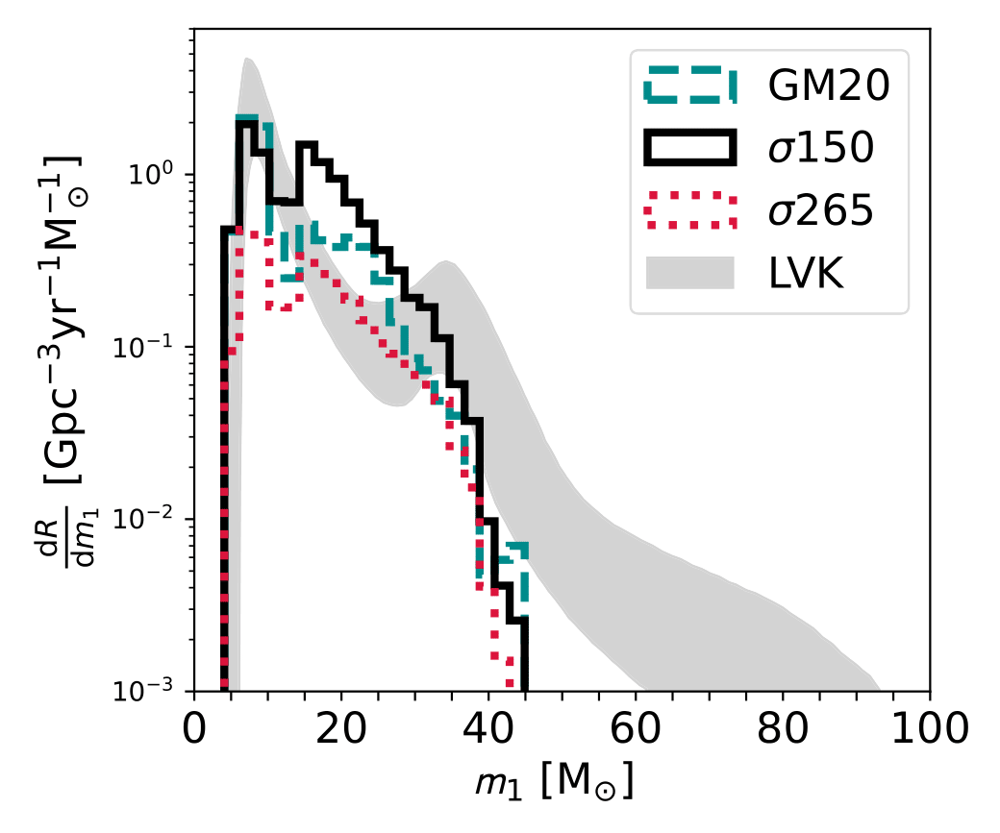
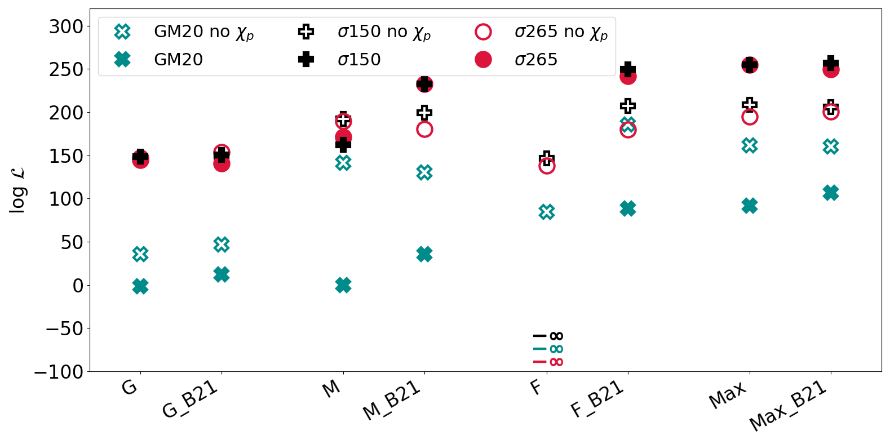

Black Hole Spin Evolution and Model Selection from GWTC-3
📄 Related Publications
Binary black hole spins: model selection with GWTC-3The Challenge: What Sets Black Hole Spins?
Understanding black hole (BH) spins is critical for unveiling the physics of massive stellar evolution and binary interactions. Spins encode how angular momentum is transported within progenitor stars and can be influenced by binary interactions, tidal forces, and supernova kicks. However, the physical mechanisms regulating these processes remain uncertain.
This project confronts several theoretical models with gravitational-wave observations to determine which best explain the observed spin distribution of merging binary black holes (BBHs).
Competing Models of Angular Momentum Transport
We explore four toy models that represent a broad range of assumptions on internal angular momentum transport:
- GENEVA (G): Inefficient transport via meridional currents and shear (low spin dissipation).
- MESA (M): Efficient transport using Tayler–Spruit dynamo (moderate spins).
- FULLER (F): Extremely efficient magnetic transport, resulting in nearly vanishing spins (χ ≈ 0.01).
- MAXWELLIAN (Max): A phenomenological model with spins drawn from a Maxwellian distribution (σ = 0.1), empirically motivated.
Each model is also tested with an added tidal spin-up mechanism for the second-born black hole, following Bavera et al. (2020)—referred to as _B21 variants.
Tidal Spin-Up in Wolf–Rayet Stars: The _B21 Prescription
In tight binaries, the progenitor of the second-born BH may be a Wolf–Rayet (WR) star that is tidally spun up before collapse. The B21 model provides a fit for the final BH spin as a function of the WR mass and orbital period.
This mechanism is critical for models like FULLER or MESA, where most BHs would otherwise have negligible spin. Including B21 enables a small sub-population of highly spinning BHs, reconciling models with non-zero spin observations.
Observational Spin Parameters
Gravitational-wave detectors provide access to two spin observables:
- Effective spin (χ_eff): The mass-weighted projection of individual spins along the orbital angular momentum.
- Precessing spin (χ_p): A proxy for spin components misaligned with the orbit, responsible for precession.
These observables are compared across models using distributions extracted from hierarchical population synthesis simulations.
Figure 2: Mass Distribution
The model mass distributions are relatively insensitive to spin assumptions. However, kick models affect the mass peaks. The GM20 model shows more low-mass mergers due to its lower kicks preserving wider binaries, while σ150 and σ265 suppress low-mass systems through disruptions.
Figure 4: Spin Distributions

- GENEVA models peak at high spins.
- FULLER yields spins near zero — strongly disfavored unless B21 is included.
- MESA and MAX exhibit intermediate behavior.
- Including B21 raises χ_p and χ_eff, especially in models with otherwise low spins.

Figure 5: Model Likelihoods
Bayesian Analysis Framework
The model comparison is performed using hierarchical Bayesian inference. The likelihood of each model is computed using the spin and mass posteriors from 59 BBH events in GWTC-3. The analysis includes:
- Marginalization over 5 parameters:
{chirp mass, mass ratio, redshift, χ_eff, χ_p} - A population prior from binary population synthesis with metallicity and star-formation history
- Kernel density estimation for constructing continuous model predictions
Likelihoods are normalized with respect to detection biases, ensuring proper comparison with LIGO/Virgo/KAGRA observations.

Log-likelihood values demonstrate that:
- FULLER (F) is rejected unless the B21 spin-up mechanism is included.
- MAX and MESA_B21 are among the most compatible with GWTC-3 data.
- The precessing spin parameter χ_p is crucial for discriminating between models.
Key Results
- Models predicting only negligible spins (e.g., FULLER without B21) are ruled out.
- A sub-population of tidally spun-up BHs (via B21) is sufficient to match observations.
- Spin orientation (χ_p) contains crucial information: ignoring χ_p significantly weakens the constraints.
- Models with efficient angular momentum transport (e.g., MESA + B21) offer the best match.
- Low natal kick models (GM20) underperform due to their prediction of too many aligned, low-χ_p systems.
Why It Matters
This analysis provides the first comprehensive test of spin magnitude models using hierarchical Bayesian inference and real gravitational-wave data. The findings support:
- Efficient internal angular momentum transport (as in the Tayler–Spruit model),
- Tidal spin-up mechanisms in close WR binaries,
- The necessity of spin precession measurements to break degeneracies between astrophysical scenarios.
As more precessing systems are detected, we will be able to refine these constraints and further resolve the origin of black hole spins.